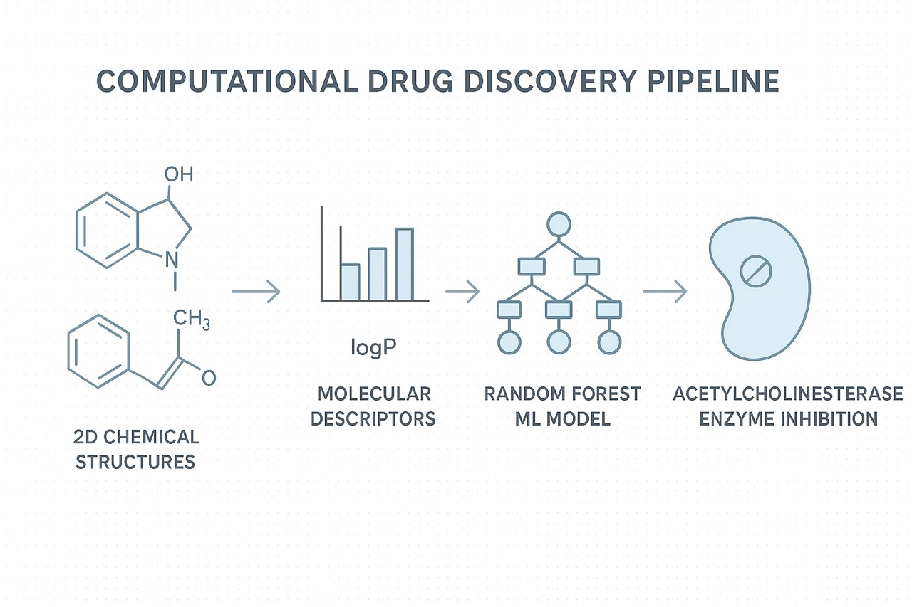
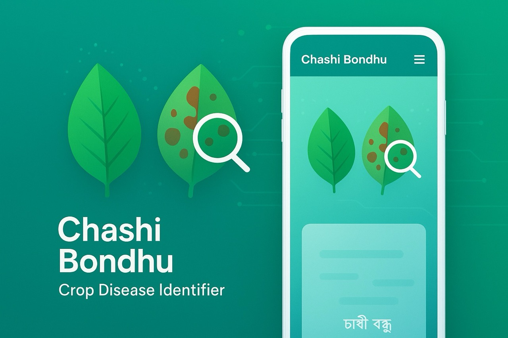
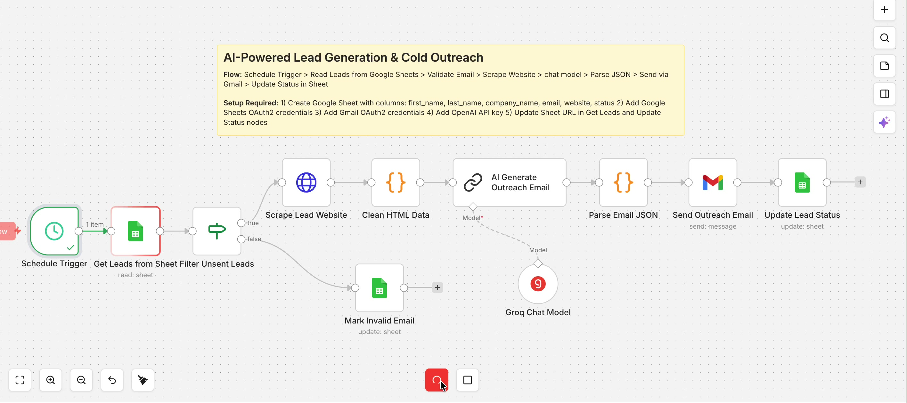
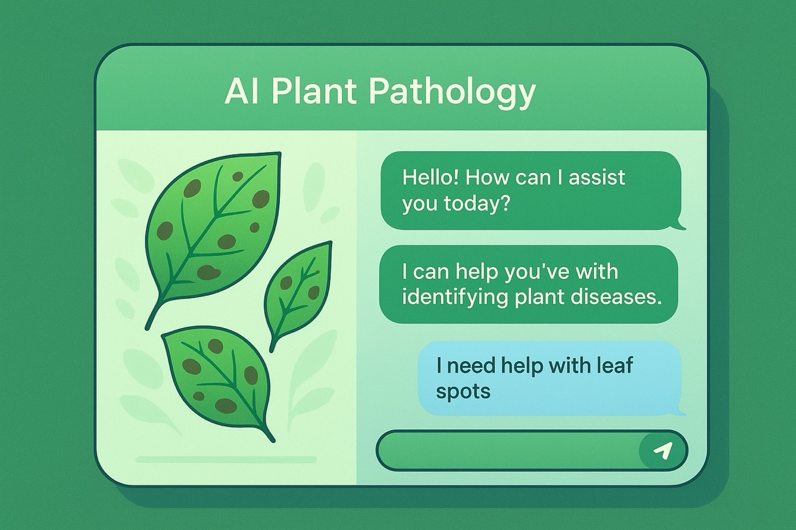
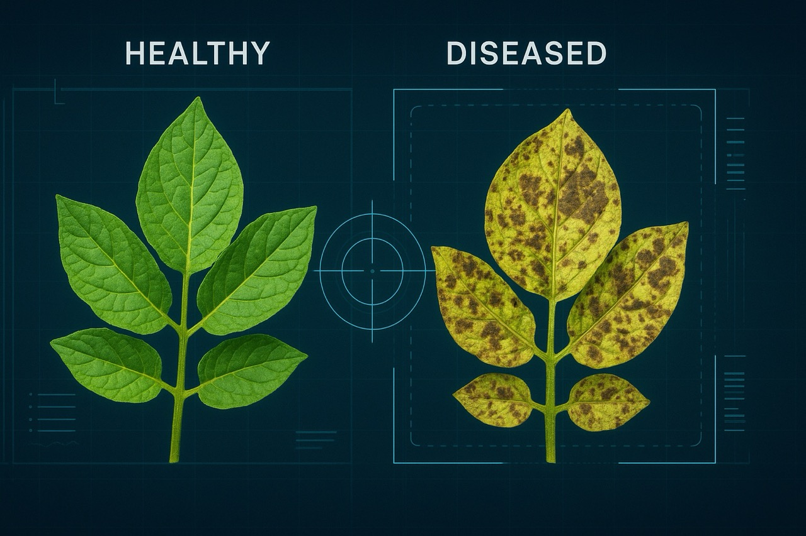
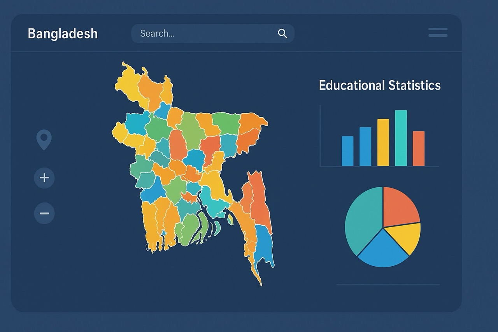

Projects & Research
Innovative solutions at the intersection of agriculture and technology

Drug Discovery Using Machine Learning
A QSAR model for predicting acetylcholinesterase inhibition using machine learning and cheminformatics.

Chashi Bondhu - Crop Disease Identifier
An AI-powered tool that uses Google's Gemini AI to analyze images of crops and identify diseases, providing treatment recommendations in both Bengali and English.

AI-Powered Cold Outreach Automation
An automated B2B outreach pipeline that scrapes lead websites, uses Groq LLM to generate personalized cold emails, sends them via Gmail, and updates lead status in Google Sheets — fully hands-free.

DamKoto Bot — Multilingual AI Support
An AI customer support chatbot for DamKoto.com.bd, a Bangladeshi smartphone store. Responds fluently in Bangla, Banglish, or English — matching the customer's language. Searches a live product catalog of 55+ phones by brand, price range, or model, checks stock, and answers delivery, payment, and return policy questions via a vector knowledge base.

PlantDoc RAG ChatBot
An AI-powered document Q&A chatbot using Retrieval-Augmented Generation with specialized agricultural models.

Potato Leaf Disease Detector
A machine learning-powered web application for detecting diseases in potato leaves using computer vision.

Interactive Bangladesh Choropleth Map
An interactive web-based choropleth map visualization tool for exploring educational statistics across all 64 districts of Bangladesh.